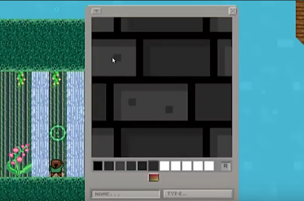
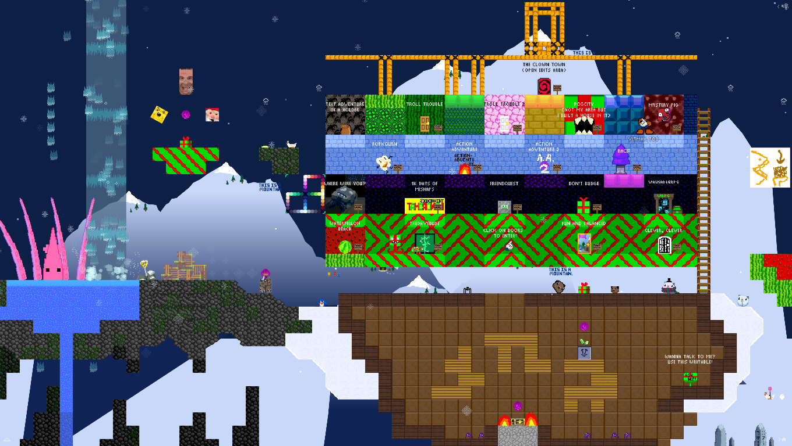

<link rel="stylesheet" href="style.css">
<section class="layout2">
    <div class="header" style="color:magenta; text-align: center; background-color: rgb(0, 0, 0, 0.2);">
        MANYLAND SHRINE<p><i>rest in piss, forever miss</i></p> (WIP lol)
        
            <div class="manyland_header">
                Q: What the hell is a "many land?"
            </div>
            <div class="manyland_body">
                A: Manyland was a pixel art sandbox game, in which players could create their own characters, blocks, and even scripts to some extent. Notice I say <i>"was,"</i> as Manyland's servers were shut down in February of 2024 due to budget issues.

                <p>
                    Luckily, the community made some tools to backup Manyland's areas before the game was shut down. <b>If you stick around, I will tell you how you can play some of the areas I made.</b>
                </p>
                
                <p>
                    This shrine will be less about the history of Manyland and more about my personal experience with the game.
                </p>
                <figure class="ml_screenshots"><figcaption>The first screenshot I took, dating back to ~2016.</figcaption></figure>

            </div>
            <p></p>
            <div class="manyland_header">
                Q: How does Manyland work?
            </div>
            <div class="manyland_body">
                A: Manyland is divided up into player-made worlds called "areas," where players can explore and collect creations of other players, or create and place their own creations if they can edit there.
                <p>There were surprisingly few limits in Manyland, you could make areas as big as you wanted, and create/collect as many items as you wanted.</p>
                <p></p>

                <figure class="ml_screenshots"><a href = https://www.youtube.com/watch?v=KpaUjKlev34></a><figcaption>The create menu, taken from a fan trailer for the game, click to see the video.</figcaption></figure>

                <figure class="ml_screenshots"><iframe height="50%" src="https://files.catbox.moe/ckc4w7.mp4" frameborder="0" allowfullscreen></iframe><figcaption>An example of how talking in Manyland looks. I love that you could see players type and delete characters in real-time!</figcaption></figure>


                <figure class="ml_screenshots"><figcaption>A very zoomed-out image of "the portal of portals," my main hub-world and workshop. Most worlds aren't even 1 MB in size but this bad boy clocks in at nearly 200 MB and was the most pain-in-the-ass to back up.</figcaption></figure>
                
                <p>
                    One of my favorite things about Manyland was the fact that if you saw something you liked, you could "collect" it and use a copy of that object in your own worlds. It was really fun to scour areas for new blocks to use!
                </p>
            </div>

            <p>
                A lot of the characters I've made have some ties to Manyland, especially my sona: Prezzy.
            </p>

    </div>

</section>